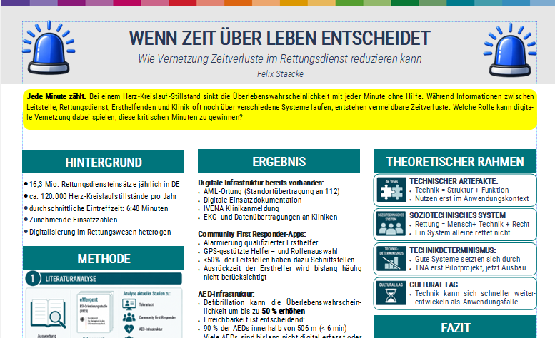

Wissenschaftliches Plakat: Wenn Zeit Leben rettet.
07.06.2026
Im Rahmen des Studiums wurde das Modul "Informatik und Gesellschaft" belegt, in dem verschiedene ein wissenschaftliches Plakat erstellt wurde. Das Plakat und weiterführende Texte finden Sie in diesem Artikel.
